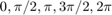
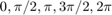
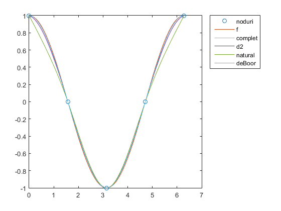

Spline DEMO
Demonstratie cu spline cubice
Contents
Alegem functia  si nodurile 
si nodurile 
f = @(x) cos(x); d=-sin([0,2*pi]); t=linspace(0,2*pi,200)'; x=[0,pi/2,pi,3*pi/2,2*pi]; y=f(x);
Spline complete
[a1,b1,c1,d1]=Splinecubic(x,y,0,d); s1=valspline(x,a1,b1,c1,d1,t);
spline cu derivate secunde
d2=-cos([0,2*pi]); [a2,b2,c2,d2]=Splinecubic(x,y,1,d2); s2=valspline(x,a2,b2,c2,d2,t);
spline naturale
[a3,b3,c3,d3]=Splinecubic(x,y,2); s3=valspline(x,a3,b3,c3,d3,t);
spline deBoor
[a4,b4,c4,d4]=Splinecubic(x,y,3); s4=valspline(x,a4,b4,c4,d4,t);
reprezentare grafica
yg=f(t); plot(x,y,'o',t,[yg,s1,s2,s3,s4]) legend('noduri','f','complet','d2','natural','deBoor','Location','BestOutside')